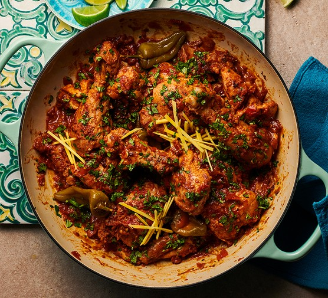

Home
Chicken Karahi

Description
Chicken Karahi, or Kadai chicken, is undoubtedly one of the most popular curries in and out of Pakistan and India.
This is a restaurant-style Pakistani Chicken Karahi recipe that can be prepared quickly and easily with no finicky steps. Tested, perfected, and loved by thousands!
Ingredients
- Ghee/Oil
- Tomatoes
- Boneless Chicken
- Onions
Steps
- Heat the oil and brown the chopped onions. Sauté the onions until they’re lightly golden. Then add garlic, ginger, and green chili pepper. The onions will deepen in color as the aromatics cook.
- Sauté the chicken. This technique, called ‘bhunai‘ sears the meat and gives it richer flavor and color. A sprinkle of salt here helps layer the flavor.
- Add the tomatoes, spices, and salt. The moisture from all the tomatoes will be enough to cook the chicken while keeping it moist.